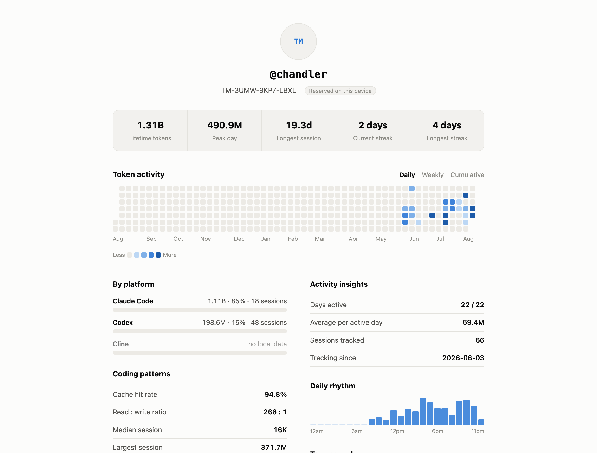

Live gauge, runaway-context alarm, and your usage patterns. Without your data leaving the machine.
✓ Notarized by Apple · Claude Code and Codex Desktop on macOS
curl -fsSL https://tokenwidget.app/install.sh | bash
Install Token Widget on this Mac: clone https://github.com/SergioChan/token-meter.git and follow INSTALL_WITH_AGENT.md
git clone https://github.com/SergioChan/token-meter.git && cd token-meter && npm run claude:install

Tokens per minute against your own baseline. Red means this turn costs several times your normal.
Flags context pollution, retry loops, and agent spirals before they eat another turn.
Claim a handle. Click it for your calendar, streaks, cache hit rate, and platform breakdown.
Computed on your laptop. Sharing is opt-in and limited to signed totals — never content.
Token Widget reads identifiers, timestamps, and token counts — never message content. It never patches the host apps. Open source: read every line.